Most apps hand you a list of ready-made programs; whichever one you pick, that plan is identical for everyone who opens it. NyxFit doesn't show a list. It reads your age, weight, body-fat level, experience, equipment and any injuries, then works out your calories, macros, weekly set volume and exercise selection there and then.
And the result isn't a single screen: your daily nutrition targets, a day-by-day training plan, your cardio dose, a progress tracking table and a PDF report you can hand to your client all come together.
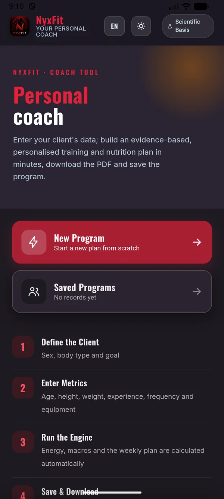
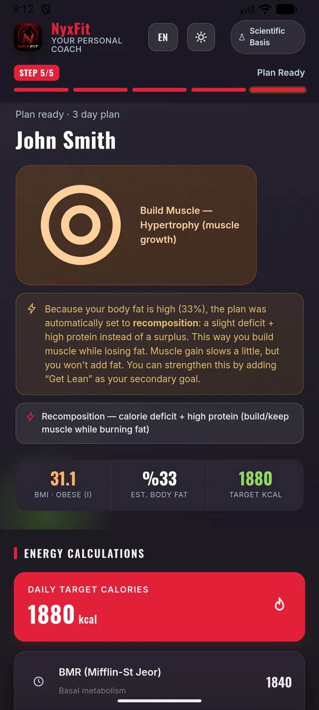
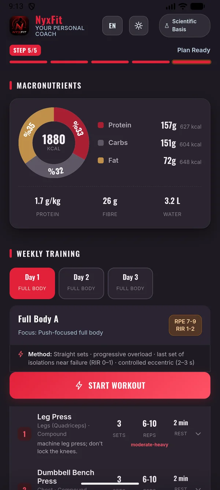
Start with sex, current body type and goal. The body-type choice sets the body-fat estimate and the direction of the plan.
Age, height, weight, experience, days per week, equipment and any injuries. It takes a couple of minutes.
Your energy needs, macros, weekly set volume and the exercises that suit you are all determined at once.
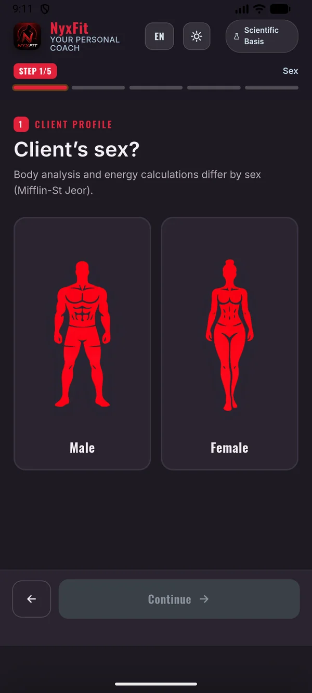
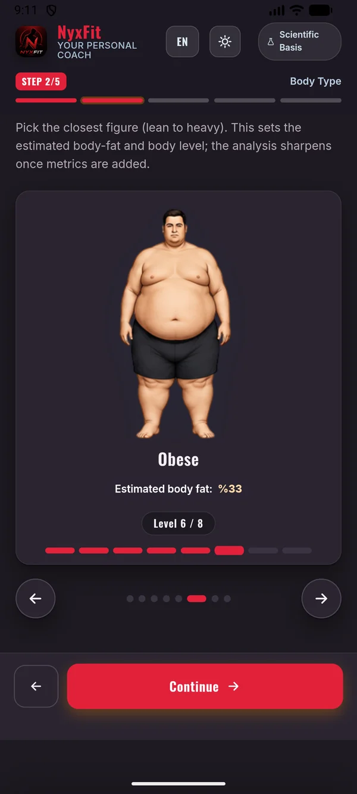
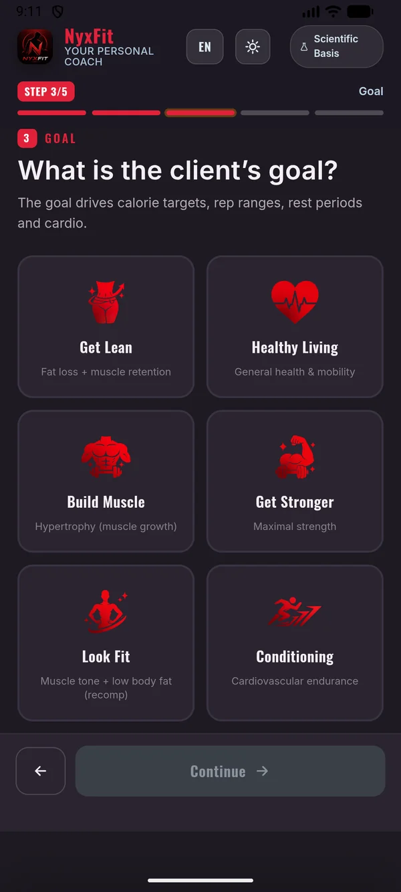
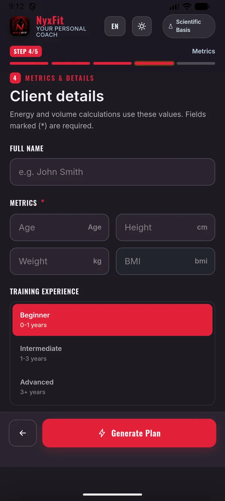
Your daily energy requirement comes from your age, height, weight and sex. Your body type and body-fat level decide which way the calories go: a deficit, a surplus, or maintenance.
When someone with a high body-fat level wants to build muscle, the app doesn't hand out a straight surplus — it switches the plan to recomposition and explains why on screen. That is how you build muscle while losing fat.
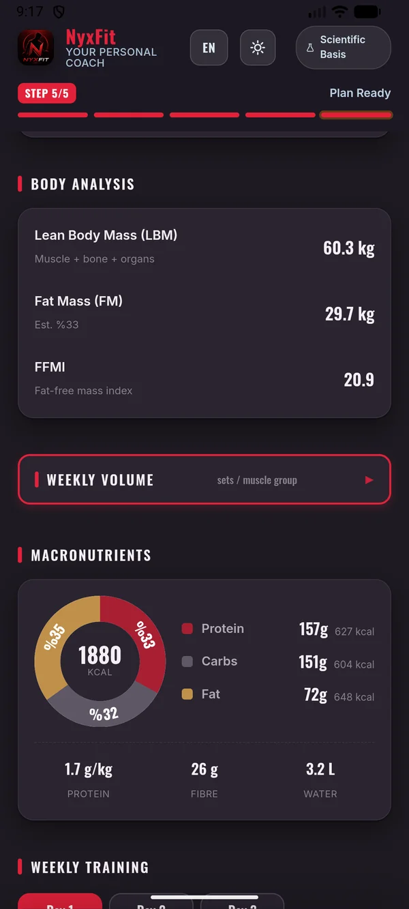
Protein, carbohydrate and fat are split according to your goal and body composition. In a deficit, protein is calculated on lean body mass — the approach that protects muscle best.
Daily fibre and water targets, the protein that falls to each meal and nutrition notes for your situation all come with the plan.
You say how many days you can train; the app builds the split accordingly (full body, upper/lower, push-pull-legs) and sets the focus of each day.
Every exercise carries its sets, rep range and rest time. The one-line technique cue underneath tells you what to do, and the RPE and RIR target is stated for each day.
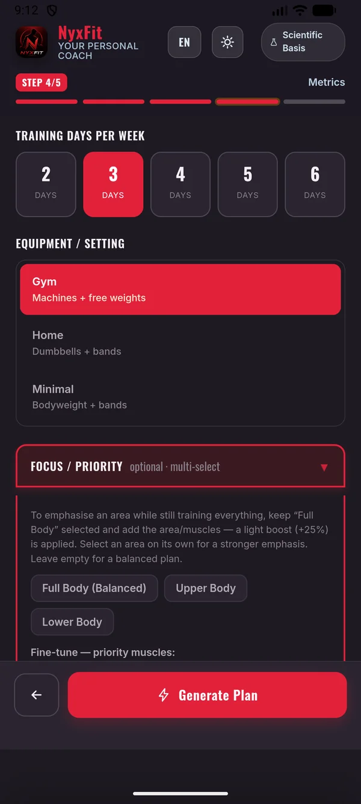
Training days sit in tabs, so you can see at a glance which day trains which area.
If you want to bring one area forward, you mark it and that muscle group gets extra volume without upsetting the balance. Exercises that stress an area you've flagged as injured never enter the program at all.
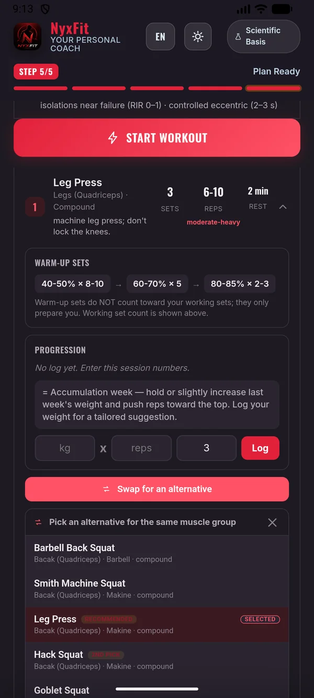
If the machines are busy, the movement doesn't suit you or something hurts, you open the alternatives list. It shows options that train the same muscle through the same movement pattern and match the equipment you have.
The moment you choose one, its sets, reps and rest adapt to the new exercise; the PDF and your workout log update too. You can go back to the recommended exercise whenever you like.
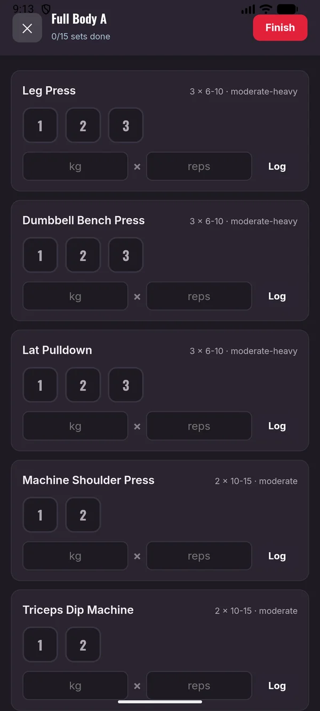
You open your phone and tick off the sets one by one. You enter the weight you lifted and the reps, and the rest timer starts on its own.
What you log becomes next week's suggestion: if you reach the top of the rep range you're told to add load, and on a deload week a reduced weight is shown instead.
A four-week cycle: three weeks of gradual accumulation, a peak week, then a deload. The app knows which week you're in and adjusts the load itself.
Weight, waist, chest, hips, body fat, energy, sleep and performance are recorded across 12 weeks, and the change from week one is plotted on a chart.
Profile analysis, calorie and macro breakdown, weekly plan, cardio plan and tracking table in one file. A professional handout for your client.
You keep each client's program and measurement history separately; tap one in the list to open, update or delete it.
Calories, protein, volume, rest… you can see the study behind each number inside the app.
Your data stays on your device. You take a backup with one tap and restore it on a new phone. No account, no cloud.
German support has just been added: over 900 texts were translated, including the interface, coach notes, nutrition explanations, the technique cues for all 309 exercises and the scientific references. You switch instantly with the language button in the top bar, and your saved programs and measurements are preserved.